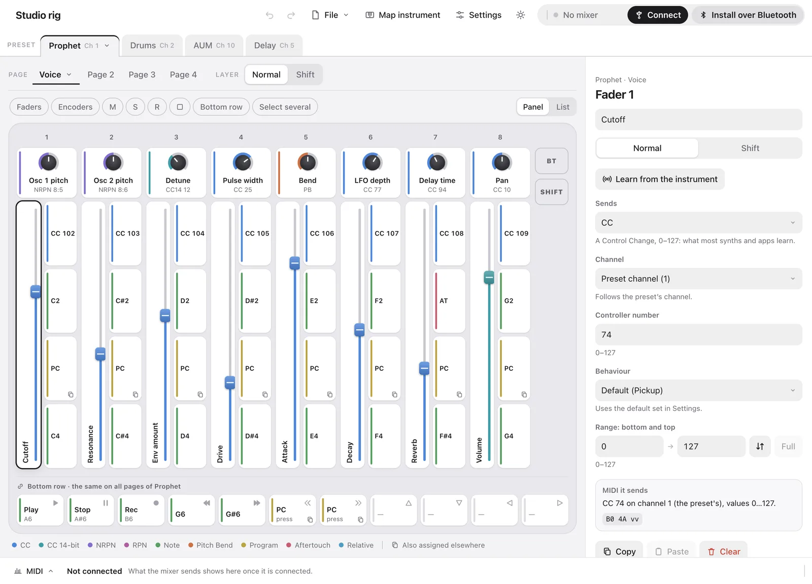
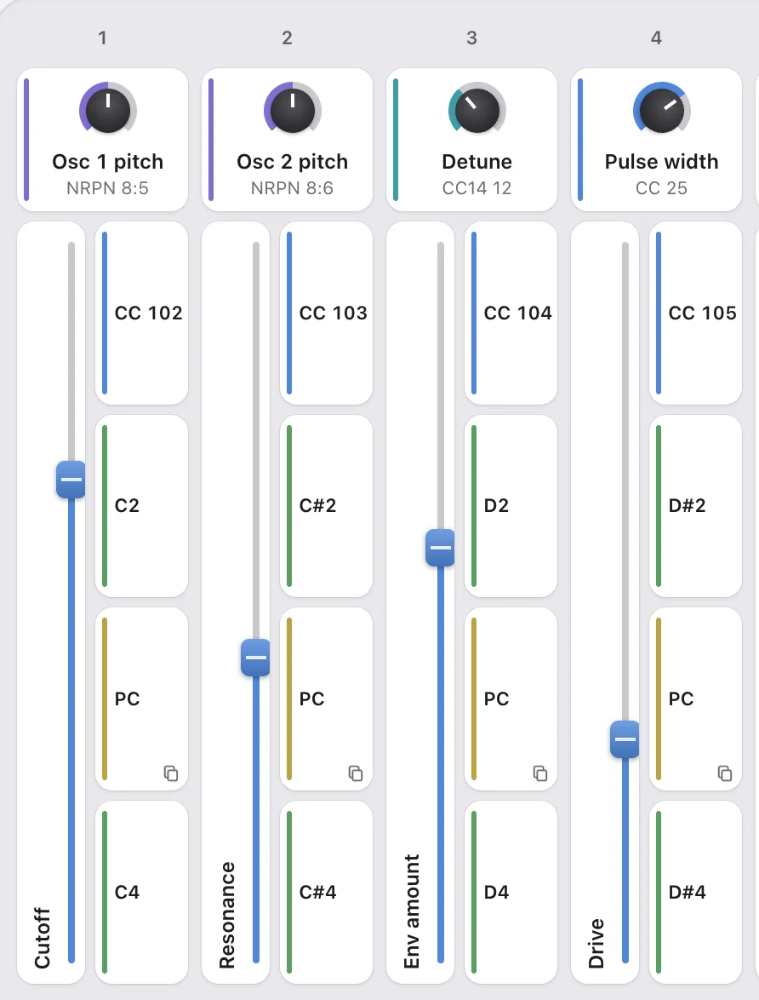
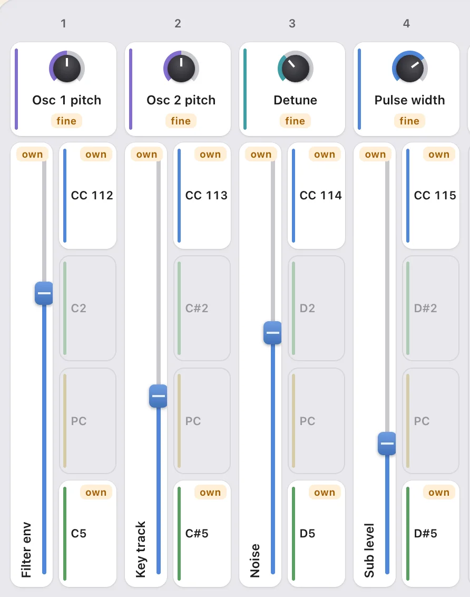
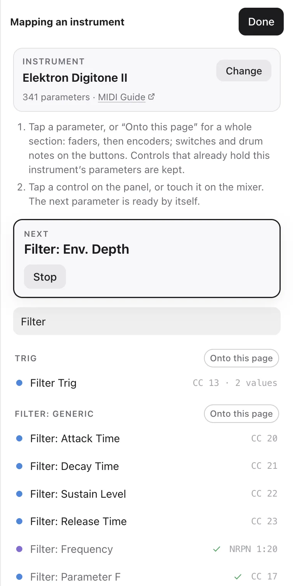
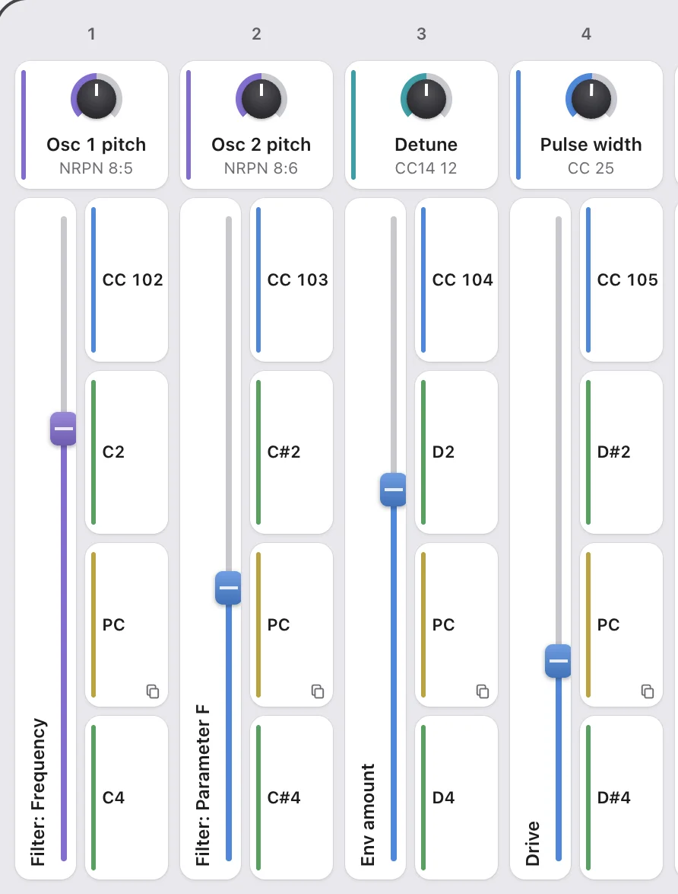

The SMC-Mixer has eight faders, eight endless encoders, 45 lit buttons, a battery and Bluetooth in a box that fits in a backpack. Its stock firmware is built around a DAW: one table of CCs, a Shift button that changes nothing, faders that jump when you switch banks. Better SMC-Mixer puts the same controls to work for synths and music apps.

A second layer on every control
Every fader, encoder and button can do something else of its own while Shift is held, with its own name: cutoff, and with Shift the filter envelope. Hold Shift, latch it with a tap, or both. Encoders turn into fine adjustment under Shift by default.




Map a synth in a few taps
Pick your instrument from the MIDI Guide: hundreds of synths with their parameters. Tap a parameter, then a control, and the next one is ready. A whole section goes onto a page in one tap.




Faders that don't jump
Switch a page and the faders no longer match the values. Pickup takes over when the fader passes the current value, Scale glides towards it, Jump goes straight there. Choose globally or per fader; until a fader catches up, its strip light blinks.
16 banks instead of one
4 presets × 4 pages, eight strips each: 128 faders and 128 encoders in one small box. Shift + arrow jumps straight to a page, Shift + double arrow to a preset, and the mixer comes back where you left off when you turn it on.
And more
Learn in one move
Select a control, press Learn and move a knob on your synth: the control now sends that message. Touching a control on the mixer selects it in the editor.
Every control on its own channel
One preset plays several synths at once, or moves to another channel with one setting.
Always in sync with your gear
Values coming back from synths and apps update the mixer, so the next move starts from the real value.
Encoders that speak synth
Plain values any synth understands, faster when you turn fast (four levels), or relative modes for DAWs.
Any MIDI message
7- and 14-bit CC, NRPN, RPN, pitch bend, aftertouch, program change and notes; any range, reversed too.
Wired or wireless
Class-compliant USB MIDI and Bluetooth MIDI at the same time; with M-Vave's adapter, a synth's DIN input with no computer.
Lights your way
Set how bright the lit buttons are, in ten steps, and let the others glow faintly so you can find them on a dark stage.
Quick and exact
Buttons answer in about 5 ms; faders reach 0 and the maximum every time and stay quiet at rest.
Install and go back
Installs over USB or Bluetooth after a full backup; going back to M-Vave's firmware needs no file.
Open source, yours to change
MIT-licensed code for the firmware and the editor: change it to fit your setup, build it yourself, share what you make.
Get started
Connect
Open the editor in Chrome and connect the mixer with a USB cable.
Install
Choose Install, save the backup file it offers, and follow the steps. Going back to M-Vave's firmware needs no file.
Play
Switch the mixer off and on. Your controls send what the editor shows; change anything and it plays at once.
Read the user guide: installing, connecting, the editor, the panel and a first preset. Firmware files and release notes: GitHub Releases.
Support the project
Better SMC-Mixer is free and made in spare time. If it makes your mixer better, you can buy the author a mango.